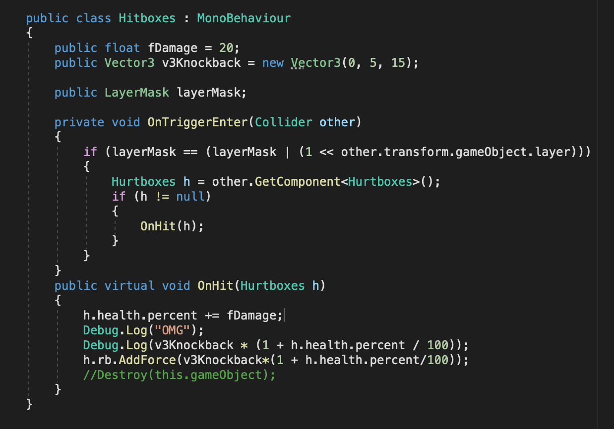
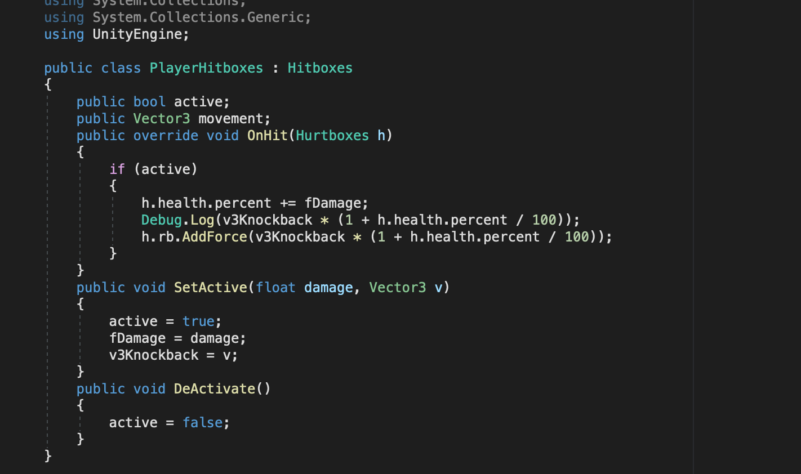
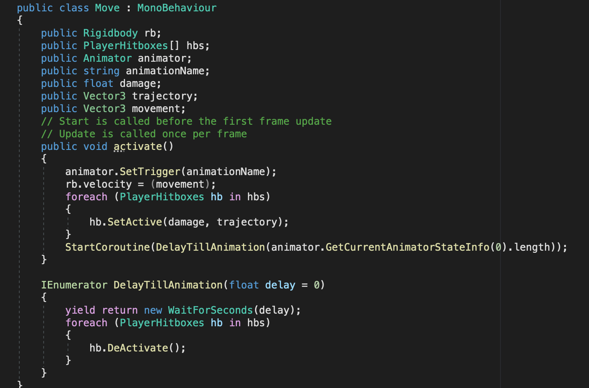

Hello I'm Neeraj Gogate!
I am a student at Allen High School looking to pursue a major in computer science.
I have been coding for about 5 years in various languages such as Python, C/C++, C#, Java, JavaScript, HTML/CSS, and Swift. My favorite programming language is C++, as it provides speed, safety, and works generally well with different styles of coding that may be necessary for different projects.
Over the last couple years I have made several projects in Unity. I started using Unity in 9th grade when my friends and I had the idea to make our own game together. We formed our own indie development studio, Cram Biggo Development Studios, and are currently working on our very first project. I am also one of the leads on The Vulcan Initiative, a student-led group that creates Virtual Reality Apps for Allen High School. We have currently made one application, and are working on several more to be released throughout the school year.
I have also worked in web development. Last year, I was a development manager for the team that created the app that was chosen to be used prior to Arena Scheduling. The app was used by students at Allen High School to make a mock schedule to prepare for Arena Scheduling, and was deployed over a period of two weeks. The application also featured a game made entirely in JavaScript at the end of scheduling to incentivize students to complete their schedules.
Why have a Digital Portfolio?
A digital portfolio allows people to log their personal achievements and general life. It essentially acts as a hub to store documentation on your projects and allows other people to view them in a concise manner. While these features are useful, a digital portfolio also has many other benefits.
A digital portfolio also demonstrates the personal improvement of the creator over time. A lot of people often experience the feeling of being stuck in a rut, where they cannot seem to improve or get past a certain point. This is often because of their change in skill level being slower than it was before, as improvement in fields typically slows down the more advanced the topics get. By having a well documented digital portfolio, one can easily see their skills from a couple of months ago to even a couple of years ago. This is helpful as it allows them to see some of their old programs and compare their skills and practices from then to now.
Additionally, a digital portfolio helps with applying for colleges and jobs. This is because admissions officers and employers can easily see your interest in a subject using a digital portfolio, as your passion projects are all laid out in one easy to navigate format. This allows for a more in depth deeper understanding of your personality than something like a resume, as the digital portfolio is able to contain a lot more detail and information than the general two page limit of a resume.
Lastly, a digital portfolio can be a safe way to keep track of your projects, as it is much easier to store information in multiple places than a physical portfolio would be. With a digital portfolio, the portfolio can be stored locally, in GitHub, or on an external hard drive. This could not be possible without the portfolio being digital, as the portfolio would be much harder to replicate(while keeping both style and substance) physically. The digital portfolio being stored in multiple places ensures that even if some form of the portfolio can exist.
Overall the Digital Portfolio is an invaluable tool due to its clear display of a person’s journey, its necessity in the application process, and its relative safety.
Classes
Computer Science I
This course included the basics of Swift and programming. It provided basic Swift proficiency covering ideas such as counting systems(binary, decimal, hexadecimal, etc.), conditionals, loops, and object-oriented programming.
Computer Science II
This course further expanded on concepts taught in CSI. It leaned more into the Web Development side of programming, with a focus on creating a website through HTML, CSS, and JavaScript. The course also featured recursive systems, through applications in Swift such as Lindenmayer systems.
AP Calculus BC
This course taught me the fundamentals of Calculus, The main topics included limits, derivatives, integrations, differential equations, parametric equations, and sequences/series.
AP Physics I
This course covered Algebra-Based physics applications in topics such as kinematics, dynamics, circular motion, energy, gravitation, momentum, simple harmonic motion, and rotational motion.
ISP
Concept
The basic concept behind the ISP was creating a fighting game based on platform fighters such as Super Smash Bros. The game was to feature multiple characters, based on characters from other mediums, who would be able to fight each other with their custom movesets. Players would attempt to knock other players off the map to score a point, and whoever has the most points after a certain amount of time wins.
Motivation
The reason for creating the game was that it would be quite a tricky project. Fighting games are often very technical and require a lot of intricate parts to be running smoothly. Additionally, the game development process is also pretty fun, so that also contributed to the reason behind making the game.
Code Snippets
The Hitboxes class functioned as a parent class template for hitboxes. The first function, OnTriggerEnter, would first determine whether there was a collision happening with the object that the hitbox was put on. It would then check to make sure that it is hitting another player’s hurtbox, so that it will know whether or not the opposing player should take damage. If it isn't a player, then the function terminates, but if it is, the OnHit function is activated. The OnHit function would then determine the amount of damage and knockback that should be done.
The PlayerHitboxes class functioned as a child of the Hitboxes class, and inherited its properties. This time instead of simply doing damage if a collision occurs in the OnHit function, the PlayerHitbox checks if the player's hitboxes are active or not. The other player should only get hurt for the duration of the move performed, so there needs to be a check for if the move is active. This is in the form of the SetActive function, which sets the PlayerHitbox active at the start of the move, and the DeActivate function which is called to deactivate the hitbox once the move is finished.
The Move class is used to simulate the movements a character can make to fight the other character. Whenever the specific key is pressed to do the move, the activate function is called. This function triggers the animation to happen, so it is visible which move is occurring, and moves the character however far the move is supposed to move them. It also sets the hitboxes active which need to be active. Lastly, it delays the deactivation of the hitboxes until the move is finished through the use of a Coroutine.
Conclusion
Overall the game's main hiccups were the fact that the development process was largely taken up by the creation of models, so the amount that could be done on a code level was less than originally hoped. The game runs smoothly overall, and while there isn’t as much balance as a game like this should have, it functions for its purpose.